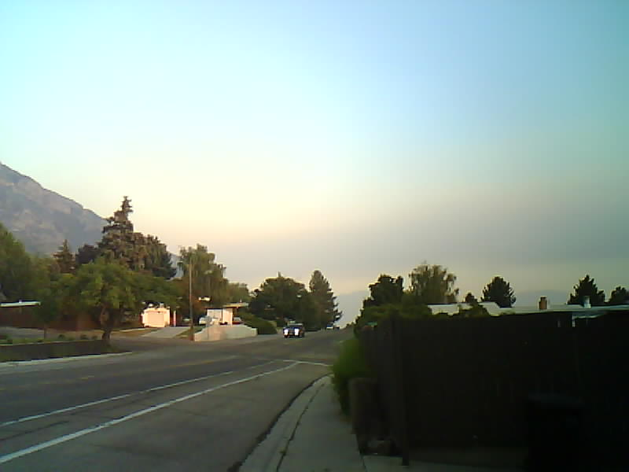
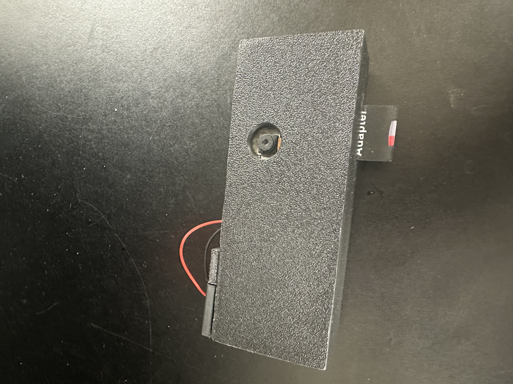
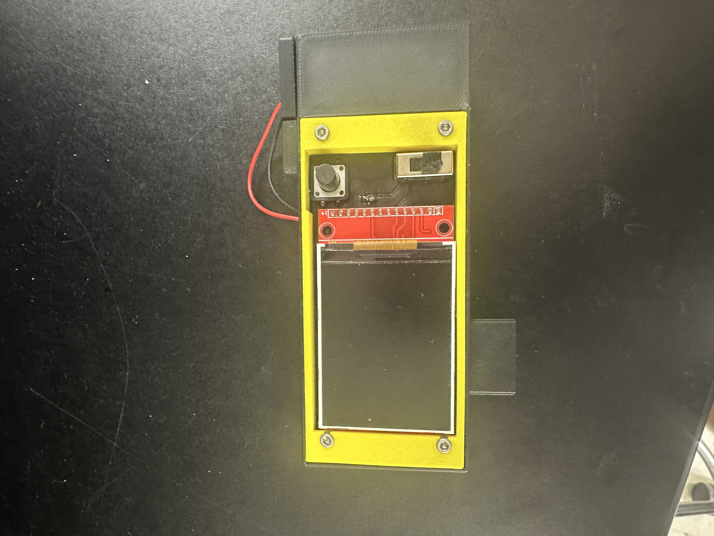
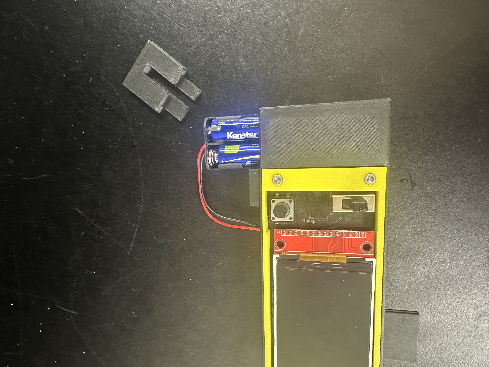
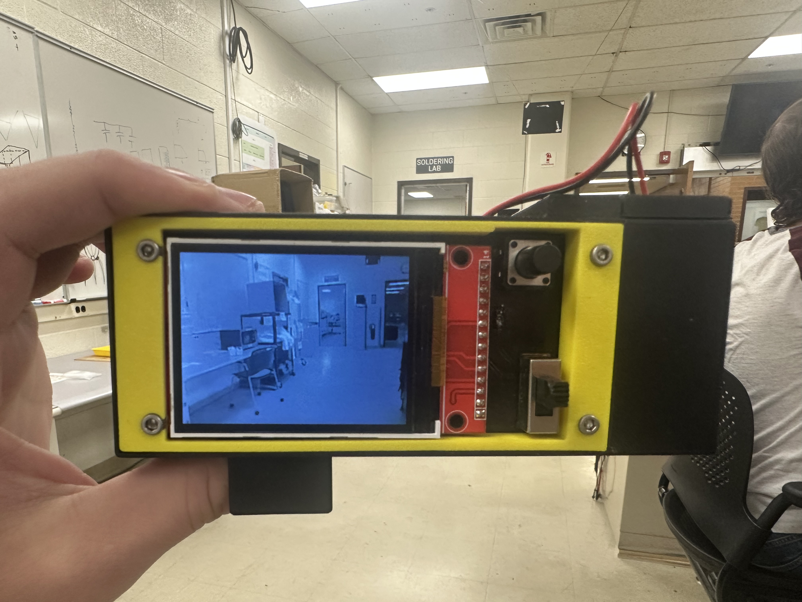

1 / 5



Simple Digital Camera
This was a simple project to make a digital camera. It takes and saves a photo to an sd card. It also shows the current image on a small TFT screen. The project uses an ESP32-S3 Cam Module, a PCB I designed, manufactured, and populated, and a 3D printed case I designed and printed. The project was made in C.
View case study